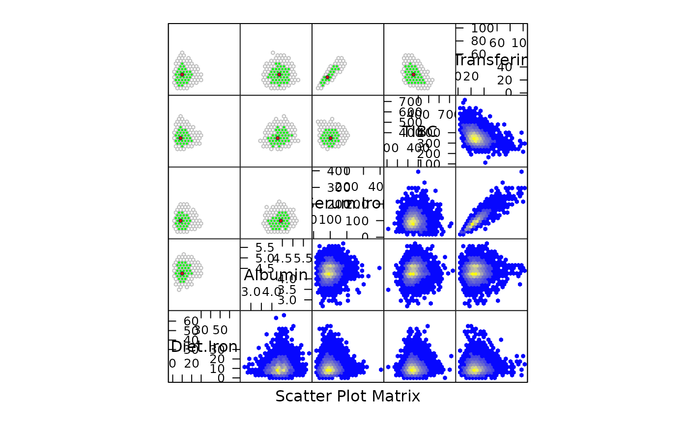

hexplom.Rdhexplom draws Conditional Hexbin Plot Matrices. It is similar
to splom, expect that the default display is different.
Specifically, the default display is created using
panel.hexplom, which is an alias for panel.hexbinplot.
hexplom(x, data, ...)
# S3 method for formula
hexplom(x, data = NULL, ...)
# S3 method for data.frame
hexplom(x, data = NULL, ..., groups = NULL,
subset = TRUE)
# S3 method for matrix
hexplom(x, data = NULL, ..., groups = NULL, subset = TRUE)
panel.hexplom(...)The object on which method dispatch is carried out.
For the "formula" method, a formula describing the structure
of the plot, which should be of the form ~ x | g1 * g2 *
..., where x is a data frame or matrix. Each of g1,
g2, ... must be either factors or shingles. The conditioning
variables g1, g2, ... may be omitted.
For the data.frame and matrix methods, a data frame or
matrix as appropriate.
For the formula method, an optional data frame in which
variables in the formula (as well as groups and
subset, if any) are to be evaluated. By default, the
environment where the function was called from is used.
see splom. The
non-standard evaluation of groups and subset only
applies in the formula method. Apart from arguments that
apply to splom (many of which are only documented in
xyplot), additional arguments meant for
panel.hexplom (which is an alias for
panel.hexbinplot) may also be supplied. Such
arguments may include ones that control details of the hexbin
calculations, documented in gplot.hexbin
An object of class "trellis". The
update method can be used to
update components of the object and the
print method (usually called by
default) will plot it on an appropriate plotting device.
## Simple hexplom
data(NHANES)
hexplom(~NHANES[,7:14], xbins=15)
## With colors and conditioning
hexplom(~NHANES[,9:13] | Sex, data = NHANES,
xbins = 15, colramp = magent)
## With custom panel function
hexplom(NHANES[,9:13], xbins = 20,colramp = BTY,
upper.panel = panel.hexboxplot)
